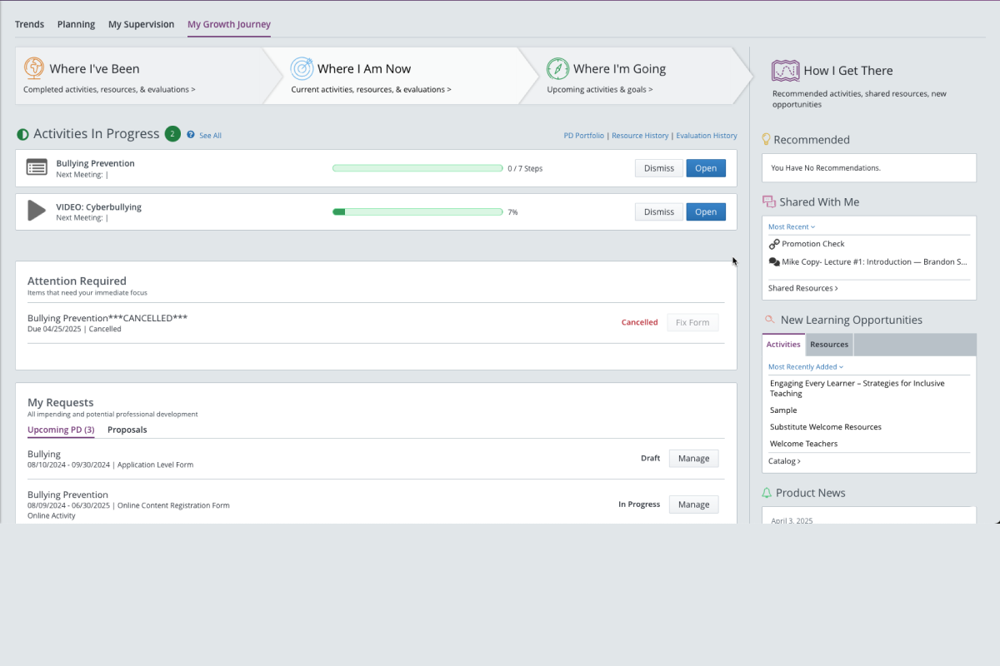
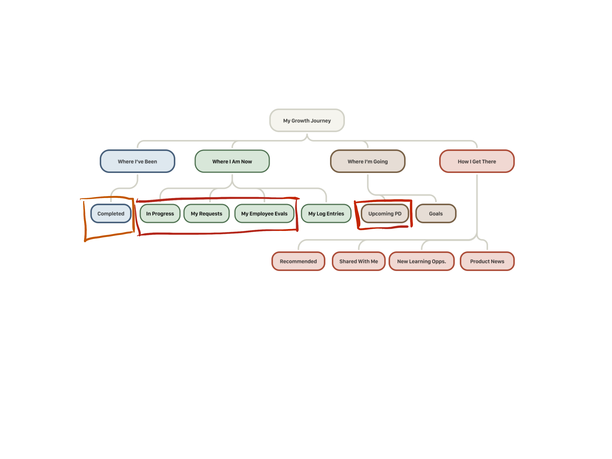
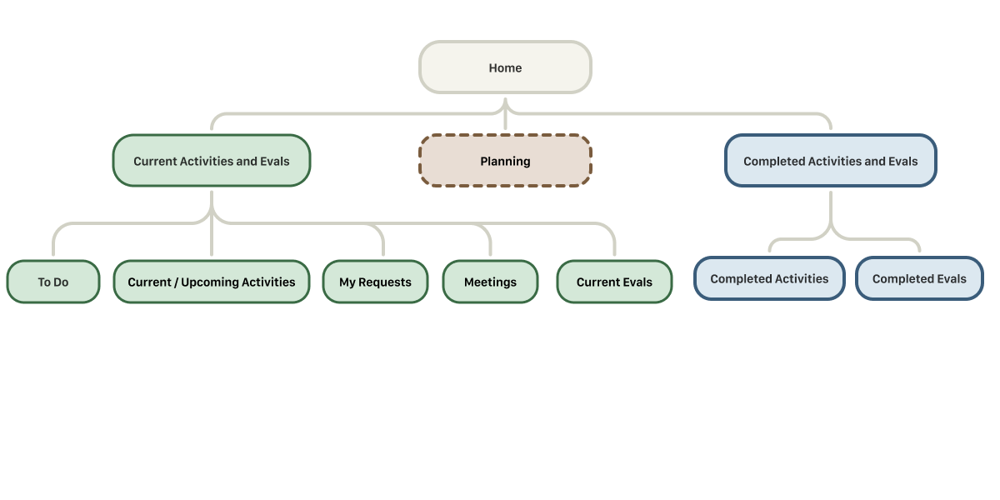
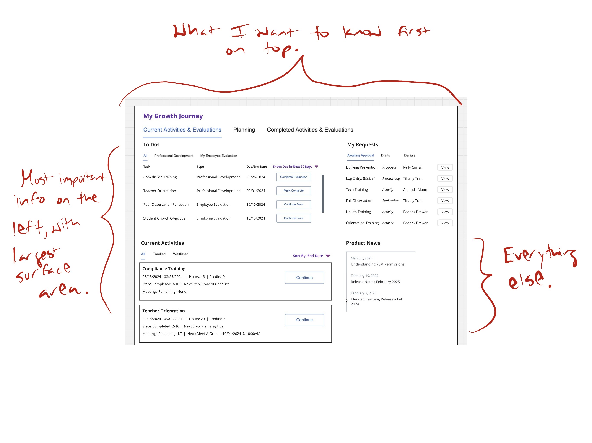

From Friction to Focus
Turning a dashboard teachers dreaded into one that felt like a relief.


The Brief
My Growth Journey (MGJ) was a legacy redesign that was not making users happier. It was supposed to be a new dashboard experience that helped staff "focus on their growth and not on keeping track of it."
Even after MGJ was released, Professional Learning Management had the lowest NPS score of all of Frontline Education's products included in the surveys.
Based on existing research and analytics available to me, I proposed a new design direction that delivered on the original promise.
Outcome
My new design direction produced unanimous positive responses across 6 participants. The final designs were in active development at the time of my departure from Frontline.
I also made new contributions to our design system which were approved as reusable React components, making my designs available for use across all of Frontline's products.
What I Did
- In roadmap planning, identified the MGJ landing experience as the highest-impact opportunity and made the case to cross-functional leadership
- Translated existing ODI research into a new design direction
- Led the redesign from wireframes through high-fidelity specs
- Planned and facilitated client validation sessions
- Contributed new reusable components to the design system
Methods
- Opportunity scoring / prioritization
- Research synthesis
- Low-fidelity wireframes
- High-fidelity mockups
- Client validation interviews
- Design system contribution
The Problem
Our PLM product was so hard to use that teachers dreaded logging in to complete their professional development. In one case, it literally cost someone a raise.
Users just wanted to get in, see what needed attention, and get out. But the existing experience scattered critical actions, progress indicators, and approvals across a layout that didn't match their mental model. They had no idea where to look to get the information they cared about.
Identifying the Opportunity
I proposed this initiative during a cross-functional roadmap planning meeting while we reviewed recent NPS scores. I noted that users repeatedly flagged navigation as a pain point.
I recommended the landing experience as the place where we could make the biggest impact with the least development effort.
We had also recently completed Outcome Driven Innovation research where we had the most up-to-date feedback on the current experience for teachers and staff trying to complete professional learning on our platform.
Gathering Insights
Outcome Driven Innovation interviews. The previous version of the dashboard had been envisioned and designed based on institutional knowledge from internal stakeholders in Support and Implementation. To reset our understanding, we conducted ODI interviews to get to the reality of how our end users managed their professional development today, whether that included Frontline's tools or not.
"I probably put in easy 90 hours of PD this year. You know how many I logged? Zero."
High School Teacher · Interview participantLogging professional development was so painful, it was costing teachers money. One participant had completed roughly 90 hours of professional development and logged none of it, and the consequence was a missed pay raise. They stopped believing the effort to document it was proportional to the benefit.
My Growth Journey did not match the mental model of our users. My Growth Journey organized itself around a reflective metaphor — "Where I've Been / Where I Am Now / Where I'm Going" — that didn't match how anyone actually used the system. The mental model was task management, not a literal growth journey. The mismatch meant the most prominent element on the page was the least useful.
"Waiting on someone else" is an important state to represent. Another anxiety we heard a lot was, "I don't know if I need to do something or if an administrator does." One teacher described spending months re-clicking through completed items because she couldn't tell if she needed to take further action to clear them off her list. Another had a weekly check-in ritual. One admin described individually emailing teachers because she couldn't see completion status without her own tracker.
NPS scores. Professional Growth had an NPS of −12.7 — the lowest of all 7 products included in our surveys. Ease of use was the #1 reason for detractor scores, with 34 mentions — more than features, integration, or customer service.
Professional Growth NPS: −12.7 — lowest of all 7 products surveyed.
Ease of use was the #1 detractor driver with 34 mentions — more than features, integration, or customer service.
Page analytics. Our page analytics showed that users skipped the MGJ dashboard entirely and went straight to the Learning Plan page — a legacy page that was dated but at least more straightforward than the "journey." It confirmed that the existing experience was not successful in changing users' behavior.
Design Process
Information architecture audit. Before diving into design, I mapped the existing architecture and compared it against what participants had told us in interviews: what they came to do, how often, and what they found valuable. The gap was immediate.
The content users prioritized most was scattered across three branches. An entire branch dedicated to content discovery occupied equal navigational weight despite research showing no participant used the dashboard to find new PD. That finding, more than anything else, shaped the restructuring that followed.


Low-fidelity wireframes. I moved on to low-fidelity wireframes to focus on the new information hierarchy without worrying about interface styling. I restructured the new landing experience around user intent rather than the growth journey metaphor, organizing content by urgency: what's happening now at the top, in-progress work in the middle, secondary content accessible but visually deprioritized.


Concept validation. I facilitated interviews with six clients across three districts to validate the design direction. Participants immediately understood the to-do panel without explanation and responded to action-specific CTAs as a direct solution to a problem they'd been living with.
"The box tells you exactly what I need to do. I don't have to look for it."
First-Grade Teacher · Interview participantA district PD director described the to-do section as "phenomenal" and said it would help staff "not need to dig too deep." A digital learning specialist called the current experience "information overload" and the redesign "really focused" — unprompted. Sessions also surfaced useful refinements: separating upcoming from active items in Current Activities and surfacing activity-related meetings. Both ideas made it to the final designs.
Refining the experience in high fidelity. The key design challenge was prioritizing urgent content without hiding secondary information. I proposed a visual treatment using background color to create hierarchy within the tiled layout. Primary tiles — To Do and Current Activities — sat on white card backgrounds. Secondary tiles — My Requests, Meetings, What's New — used the page's gray background, appearing "set back" from the primary content. The effect created a clear scannable hierarchy without fragmenting the layout.
Design system contribution. I worked with the design system lead to review my proposals. He steered me toward existing components where they solved the problem, keeping the system lean — but agreed that the "set back" tile treatment and several new patterns I proposed were valuable additions. These were approved as reusable React components available to other product teams across the platform.
Outcome
With unanimous positive responses from participants during concept validation, the team felt confident moving forward with the high-fidelity designs. The final designs were in active development at the time of my departure from Frontline.
I also made new contributions to our design system which were approved as reusable React components, making my designs available for use across all of Frontline's products.
Key Takeaways
- Reducing branches is a structural argument, not just cleanup. Consolidating from four top-level branches to three reflected how users actually think about their work — current, past, and future — rather than the reflective growth narrative the original architecture imposed on them.
- Removing a broken feature is a stronger move than redesigning it. The discovery cluster in "How I Get There" failed because it overpromised on features it wasn't delivering. Rather than patching it, I created architectural space for a rebuilt discovery experience that could actually deliver on its promise.
- Language changes at the IA level, not just the UI level. Renaming "My Employee Evals" to "Current Evals" removed possessive, role-specific framing in favor of task-state language — the same principle driving call-to-action and status label decisions throughout the redesign.